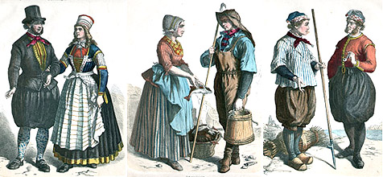
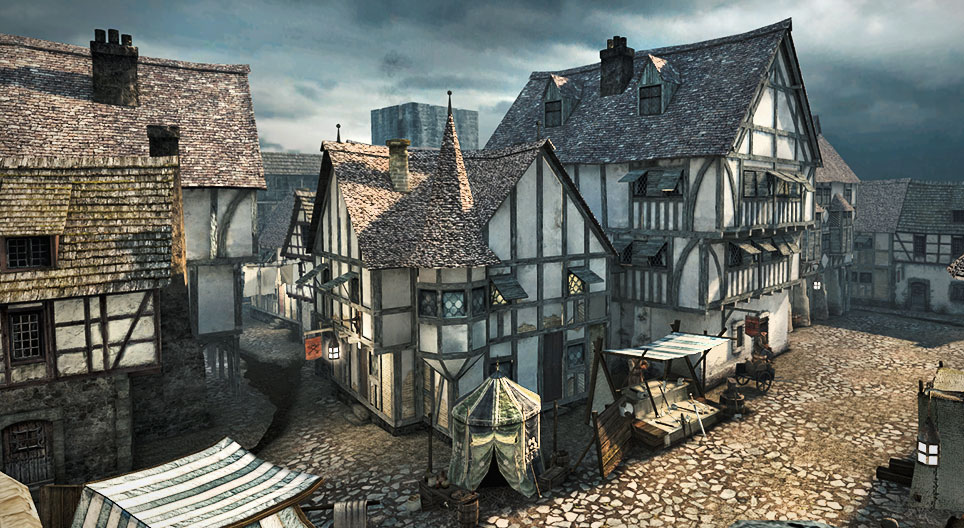
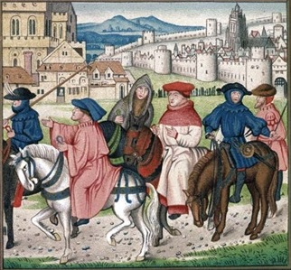
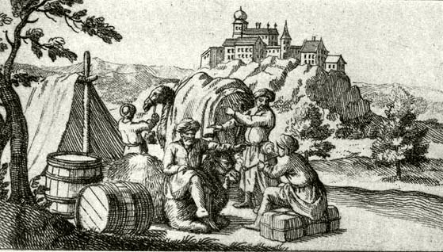
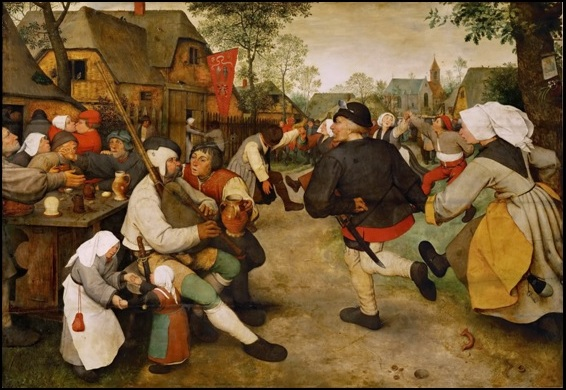
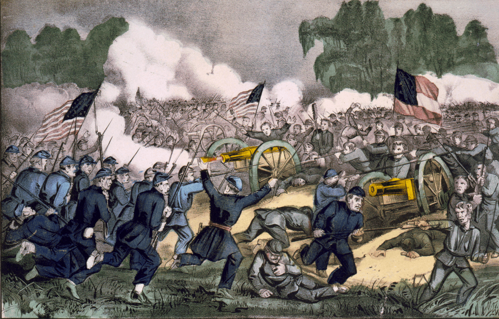
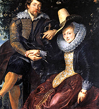
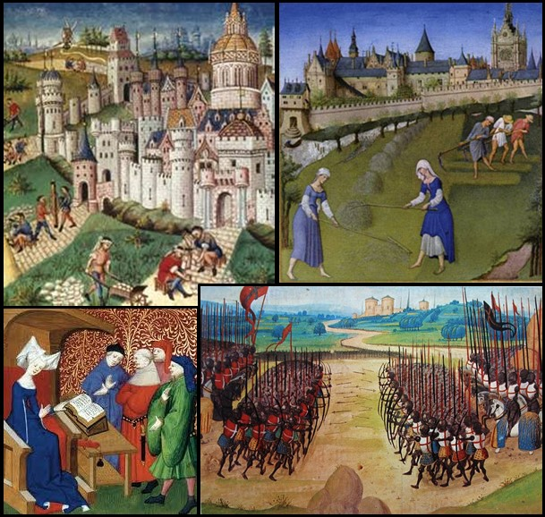

1.Jellemző öltözködés

Egy átlagos napomon hosszú gyapjúruhát hordok, amelyet bőrövvel szoktam hordani. Cipőnek egy fekete vagy sötétbarna bőrcipőt szoktam hordani, hidegben vastag köpenyt és kapucnit, sálat viselek. Ruháim főként gyapjúból és lenvászonból készülnek. A selyem és más drága anyagokra nincsen pénzem azok a gazdagok kiváltságai, ruháimat sokszor kell javítani, de sokáig használhatóak. A ruházatomon azt lehet látni hogy egy átlagos városi polgár vagyok, nem egy jobbágy és nem egy nemes. Nincsenek drága ékszereim és ruháim, de mindig tisztességesen jelenek meg az utcán. Ruháim egy becsületes, munkából élő embernek a képét mutatja.
2.Környezet

Egy kétszintes kőből és fából készült családi házban élek a város szélén. A tetőnket cserépből építettük, hogy minél jobban védjen az esőtől. Van egy kis udvarom benne néhány álattal (csirkével, kutyával), de saját földem nincsen. A műhelyem a házam része itt dolgozok, váram nincsen az a nemeseké. A városszélén élünk, az utcák szűkek és gyakran sárosak, kátyusak. A házak szorosan helyezkednek el. A piactér a városközpontja, ott zajlik a kereskedelem és mindenféle vásárok.
3.Életmód

Hajnalban kelek, imádkozom, majd egész nap a műhelyemben dolgozom segédeimmel. Estére hazatérek a családomhoz, és a tűz mellett pihenünk meg. Hétköznap dolgozom, mert a munka tart el bennünket, ünnepnapon viszont templomba megyek és a közösséggel ünneplek. Ilyenkor jobb étel kerül az asztalra, és vidámabb a hangulat. Kevés szabadidőmben a céhtársaimmal beszélgetek vagy a családommal töltöm az időt. Télen gyakran meséket és szentek történeteit hallgatjuk.
4.Feladataim

Általában a műhelyben dolgozok a piacon is árulok sok mindent. A város vezetőinek és a királynak, például Luxemburgi Zsigmond rendeleteit is be kell tartanom. A családom tőlem kap megélhetést és tanítást.
5.Ünnepek

Főként az egyházi ünnepekre szoktunk készülni, húsvét, karácsony és a böjt. Ilyenkor kitakaritjuk igényesen a házat és minőségibb ételeket teszünk az asztalra. Az ünnepnapokon nincs munka ilyenkor mindenki a családdal tölti az idejét. Reggel elmegyünk a templomba misére, délben-este pedig együtt időt töltünk (közös étkezés,pihenés). Nekünk az ünnep megerősíti a hitünket Isten iránt és az összetartozást, szeretetet. Hálát adunk Istenünknek, erőt merítünk a mindennapi gondokhoz.
6.Kötelezettségek és félelmek

Adót és vámot fizetek, valamint szükség esetén őrszolgálatot adok a városfalon. Félek a tűzvésztől, a járványoktól és a háborútól, mert ezek tönkretehetik a munkámat, családomat.
7.Viselkedés és emberi kapcsolatok

Tiszteljük az idősebbeket és a mestereket, és igyekszünk megtartani adott szavunkat. A jó hírnév nagyon fontos a városban. A király és a nemesek állnak felettünk, a városban pedig a bíró és a céhmester irányít. A mester tanítja az inast, aki engedelmességgel tartozik neki. A becsület és a hűség tartja össze a családot és a céhet, nélkülük az ember magára maradna. A vallás vezeti tetteimet, mert hiszem, hogy Isten minden lépésemet látja.
8.Szabályok és hagyományok

A céh szabályai határozzák meg, hogyan dolgozhatok és mennyiért árulhatok. Vasárnap misére megyek, és megtartjuk az egyházi ünnepeket, mert fontos számunkra a hit és a közösség.